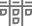

<!--~~~~~~~~~~~~~~~~~~~~~~~~~~~~~~~~~~~~~~~~~~~~~~~~~~~~~~~~~~~~~~~~~~~~~~~~~~~~
  Copyright 2014 CapitalOne, LLC.
  Further development Copyright 2022 Sapient Corporation.

  Licensed under the Apache License, Version 2.0 (the "License");
  you may not use this file except in compliance with the License.
  You may obtain a copy of the License at

     http://www.apache.org/licenses/LICENSE-2.0

  Unless required by applicable law or agreed to in writing, software
  distributed under the License is distributed on an "AS IS" BASIS,
  WITHOUT WARRANTIES OR CONDITIONS OF ANY KIND, either express or implied.
  See the License for the specific language governing permissions and
  limitations under the License.

  ~~~~~~~~~~~~~~~~~~~~~~~~~~~~~~~~~~~~~~~~~~~~~~~~~~~~~~~~~~~~~~~~~~~~~~~~~~~-->
<p-toast [style]="{marginTop: '80px'}"></p-toast>
<div class="navigation2 rows" *ngIf="!visibleSidebar">
  <div class="selected-wraper">
    <div class="selected-board">
      <div class="rotate">{{kanban ? 'Kanban' : 'Scrum'}}</div>
    </div>

    <div class="selected-nav">
      <div style=" writing-mode: vertical-rl;text-orientation: upright;">{{selectedTab}}</div>
    </div>

    <div class="open-btn">
      <!-- <i class="pi pi-arrow-circle-right" style="font-size: 2.3rem;" (click)="visibleSidebar = true" ></i> -->
      
    </div>
  </div>
  
  <!-- <ul class=" nav nav-pills p-d-flex p-pl-0 p-justify-between p-m-0">
    <li class="nav-item pad-0 setting-tab">
      <div class="half">
        <label for="profile2" class="profile-dropdown">
          <input type="checkbox" id="profile2">
          <span>
            <div class="float-left w-100">{{username}}</div>
            <div class="float-left w-100">
              <span class="version-header">
                Version : {{currentversion}}
              </span>
            </div>
          </span>
          <label for="profile2" id="Layout-Menu">
            <span class="fa fa-bars profileIcon cursor-pointer" aria-hidden="true"></span>
          </label>
          <ul class="settings-nav">
            <li *ngIf="!isGuest"><a routerLink="/dashboard/Config/" routerLinkActive="active"
                (click)="selectTab('Config')" id="Layout-Settings"><span class="fa fa-cog"
                  aria-hidden="true"></span>Settings</a></li>
            <li *ngIf="showHelp"><a routerLink="Help" routerLinkActive="active" id="Layout-Settings"><span
                  class="fa fa-info-circle" aria-hidden="true"></span>Help</a></li>
            <li (click)="logout()">
              <a id="Layout-Logout"> <span class="fas fa-sign-out-alt cursor-pointer"></span>Logout</a>
            </li>
          </ul>
        </label>
        <div *ngIf="showNotificationPanel && showNotifications" class="notfication-bar cursor-pointer p-d-flex
         p-jc-between">
          <em class="pi pi-times-circle position-absolute" (click)="hideNotifications()"></em>
          <div class="w-100">
            <div *ngFor="let notificationData of notificationPlaceHolder" (click)="messageLink(notificationData.type)"
              [ngClass]="notificationData.type === 'Project Access Request' ? 'notifications-bar-project-access' : 'notifications-bar-user-approval'"
              class="cursor-pointer">
              <ng-container *ngIf="notificationData.count">
                <span> {{ notificationData.type }} </span>
                <p-badge [value]="notificationData.count"></p-badge>
              </ng-container>
            </div>
          </div>
        </div>
      </div>
    </li>
  </ul> -->
</div>


<p-sidebar [(visible)]="visibleSidebar" position="left" [baseZIndex]="10000" style="height : 500px">

  <!--   <ng-template pTemplate="content"> -->
    <div class="nav-wraper">
      <!--Scrum/Kanban Switch starts-->
      <div id="Filters" #filterDiv class="tabs">
        <div
          *ngIf="router.url.split('/')[2]?.toLowerCase() !== 'iteration' && router.url.split('/')[2]?.toLowerCase() !== 'backlog'">
          <input id="tab1" class="tab1 test" type="radio" name="tabs" [checked]='!kanban'>
          <label class="label1 rounded filter-btn p-mr-2" for="tab1" (click)="selectedTypef('Scrum')" id="Layout-Scrum">
            
            SCRUM</label>
          <input id="tab2" class="tab2 test" type="radio" name="tabs" [checked]='kanban'>
          <label class="label2 rounded filter-btn" for="tab2" (click)="selectedTypef('Kanban')" id="Layout-Kanban">
            
            KANBAN</label>
        </div>
      </div>
      <!--Scrum/Kanban Switch Ends-->
      <div class="navigation rows ">
        <!-- <ul class=" nav nav-pills p-d-flex p-pl-0 p-justify-between"> -->
        <ng-container *ngIf="boardNameArr?.length>0">
          <ul class="nav-menu p-d-flex">
            <ng-container *ngFor="let board of boardNameArr">
              <li class="nav-item"
                *ngIf="(board.boardName.toLowerCase() !== 'kpi maturity') || (board.boardName.toLowerCase() === 'kpi maturity' && kpiConfigData['kpi989'])">
                <a class="nav-link"
                  [routerLink]="board.boardName.toLowerCase() === 'kpi maturity' ? 'Maturity' : board.link"
                  [routerLinkActive]="['active']"
                  [ngClass]="{'active': selectedTab.toLowerCase() == board.boardName.toLowerCase()}"
                  (click)="selectTab(board.boardName,board.boardId)">
                  {{board.boardName}}
        
                  
                  
                
                </a>
                <!-- edit dashboard name button -->
                <!-- <div class="btn-custom p-p-0 rounded p-mr-0 p-d-flex cursor-pointer" *ngIf="board.boardName ==  mainTab">
                  
                </div> -->
              </li>

            </ng-container>
          </ul>
        </ng-container>
        <!-- </ul> -->
      </div>
    </div>
  <!-- </ng-template> -->
  <ng-template pTemplate="footer">
    <div class="close-btn">
      <!-- <i class="pi pi-arrow-circle-left" style="font-size: 2.3rem;" (click)="visibleSidebar = false" ></i> -->
      
    </div>
  </ng-template>
  

</p-sidebar>

<p-dialog header="Rename your dashboard" [(visible)]="displayEditModal" [modal]="true" [draggable]="true"
  [resizable]="true" [style]="{width: '350px'}">

  <div class="dialog-body">
    <label>Dashboard Name</label>
    <input type="text" placeholder="Enter Dashboard Name" maxlength="15" [(ngModel)]="changedBoardName" />
    <small>Maximum 15 Characters</small>
  </div>

  <ng-template pTemplate="footer">
    <button pButton pRipple type="button" class="p-button p-button-secondary" icon="pi pi-times"
      (click)="closeEditModal()" label="Cancel">
    </button>
    <button pButton pRipple type="button" class="p-button p-button-success" icon="pi pi-save"
      (click)="editDashboardName()" label="Save" [disabled]="!changedBoardName"></button>
  </ng-template>
</p-dialog>